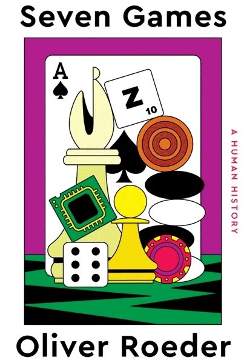

Seven Games, by Roeder
Sunday April 3, 2022
Roeder writes about checkers, chess, go, backgammon, poker, scrabble, and bridge. He gets philosophical, on Homo ludens and what AI is and so on. It's interesting and I learned about some game variations that are fun to try. Quality pandemic book.

"I’m a machine and you’re a machine and we both think, don’t we?" (epigraph, quoting Claude Shannon, when asked whether machines could think)
"games offer a space to enjoy agency." (page 9)
"Games also offer simplified models of a dauntingly complicated world," (page 82)
"a game is “the voluntary attempt to overcome unnecessary obstacles.”" (page 11)
"adding structure to play—that is, inventing and playing games—is central to our developmental intelligence." (page 12)
"Ken Thompson, the designer of the Unix operating system and a chess machine called Belle, once spent an hour a day for three years keying in lines from the Encyclopedia of Chess Openings." (page 35)
"Shannon’s paper described two strategies for programming a computer to play chess. Type A programs employed brute-force search and evaluation, analyzing every possible move, and all possible subsequent moves, no matter how unpromising they might look to a human observer. In other words, they exploited the computer’s chief strength: sheer calculation. Shannon, however, thought such a player would be “both slow and weak.” Type B programs were more selective, examining only certain small yet promising branches on chess’s enormous tree. In other words, they exploited something like human intuition. Early computer scientists thought the successful players would be Type B, but with the rapid expansion of computing power, computer scientists were lured into pursuing Type A." (page 69)
"The key to elite chess is preparation, which Stockfish facilitates." (page 84)
"“My own works have been described as works of emptiness, but it is not to be taken for the nihilism of the West,”" (page 100, quoting Kawabata)
"“I feel something very strange,” Fan said afterward. “I lose with the program and I don’t understand myself anymore.”" (page 102)
"The rules of Go—called weiqi in Chinese, igo in Japanese, and baduk in Korean—are stark and elegant, as if they were discovered rather than invented." (page 102)
Compare to ideas of math being discovered vs. invented...
"Even Confucius begrudgingly agreed that playing Go was better than sitting idle." (page 105)
"Backgammon is one of only two things in life, I heard many times during my research, that one never tires of." (page 153)
"In the end, of course, it was futile. Tesauro, whose research inspired XG, expressed a similar sentiment about human players in light of essentially perfect AI. “They play tournaments and they study very hard,” he said. “I just don’t see the point.”" (page 160)
"Chance, in other words, is a fertile garden in which human ego and delusion flourish." (page 162)
"Before bots, everybody believed that they were the best player. The type of people we have now are people who like to study, who enjoy the process of improving their own game." (pages 163-164)
"I came to understand that the appeal of this game, like the method used to train its AI players, is not winning but learning." (page 165)
"The actual lived experience of the World Series of Poker, however, comprises five elemental modes: loneliness, boredom, waiting, folding, and, ultimately, devastation." (page 172)
"As the great player Marlon Hill once said about learning the Scrabble words’ definitions, “If you are sane at all, it will drive you slowly insane.”" (page 213)
"First, Scrabble, like life, is a trade-off between today and tomorrow—between spending and saving." (page 221)
"Next to him on the table was a plastic box containing bottles of something called D-cycloserine, a molecule that, online, is purported to enhance brain activity and learning; something called F-phenibut, another brain booster and the subject of many personal drug-experience website accounts that is said to aid memory;" (page 228)
"Moreover, these languages must be common knowledge. You and your partner must reveal your dialect’s structure and intricacies to your opponents, and players are allowed to ask questions of their opponents like “What did that bid mean?” Bridge is a game of communication but not of subterfuge. As such, the “gravest possible offense” in bridge, according to its official rules, is exchanging information with one’s partner outside of what the rules allow—that is, outside of the formal and public bidding process. Illicit language is the cardinal sin of the game." (page 247)
"A sociological principle called Sayre’s law holds that disputes in academia are so bitter because the stakes are so low." (page 264)
"“I believe that when I say ‘mathematics’ and when Pam or Tim says ‘God,’ we are talking about the same thing. And I mean the very same thing. In both cases we are talking about the stunningly beautiful order that underlies the universe.”" (page 267, quoting Matt Ginsberg)
"Marx and Nietzsche, Hurka points out, believed that “a central human good was activity that on the one side is necessarily directed to a goal but on the other derives its value entirely from aspects of the process of achieving it.”" (page 274)
"“You have this AI built to do this thing really well,” he added, “but it doesn’t have any particular experience of it. ... I’m a rock climber, and AI being able to beat me at Go matters as much as a helicopter being able to beat me at a rock climb.”" (page 277, quoting C. Thi Nguyen)
"Modern AI systems require gobs of data to train, which makes easily collectible and cheap data attractive. These easy, quantified metrics can stand in for success in fields whose aims are in reality complicated and subtle: clicks for journalism, steps for exercise, box office for cinema, auction prices for paintings. Nguyen calls this “value collapse”—when rich, subtle values are replaced by simplified, quantified versions of those values." (page 278)
"Games became solace. We players did not arrive in droves seeking difficulty or complexity, or a sense of achievement, or a frivolous distraction. We arrived, I believe, in search of agency that had been temporarily denied by sensible public health measures." (page 280)